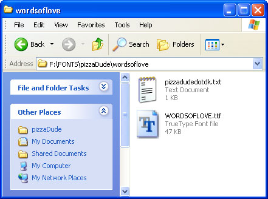
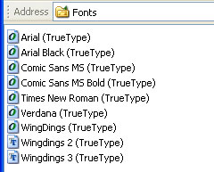
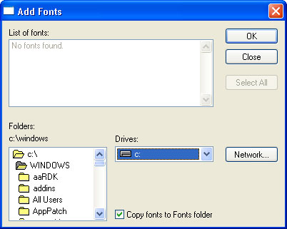
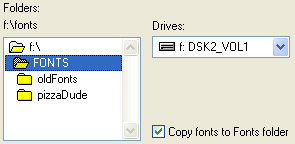
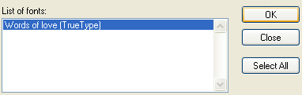
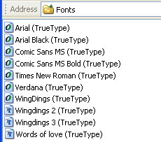
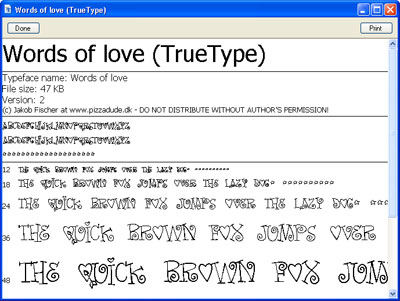
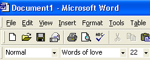

Free
computer Tutorials
|
Free
computer Tutorials
|
|
 home home |
Stay at Home and Learn | ||||
Install a New Font in Windows XP
This tutorial assumes that you have set the Control panel to Classic View. To see how to do this, click this link (opens in a new window): Set the Control Panel to Classic View
If you've ever had to choose a Font for some word processing you've been doing, then you've probably heard of Arial, Times New Roman and Courier. You may well have wanted something a little different for your work, and chosen Fonts, like Bookman Old Style or Comic Sans MS.
There will also be plenty of fonts to choose from if you have Microsoft
Word, as it comes First, though, you need to get hold of a Font that you like. Most Fonts are copyrighted to the people or organizations who created them. So you just can't install a Font without reading the copyright information attached to it. But there are plenty of free Fonts you can download. A good place to start looking is this website: http://www.pizzadude.dk/fonts.php Pizzadude is the alias of Jakob Fischer, who has been designing fonts since 1998. He has some great free fonts that you can use. We've chosen his "Words of Love" font. After it has been downloaded and unzipped, you'll see this:  Double click the Text Document to see what you can and can't do with the Font. As Jakob says,
So as long as we don't use the Font directly in any commercial work, we should be all right. But you should always get the Font creator's permission, if you're not sure. Once we have downloaded the Font we're looking for, we can go ahead and install it.
 The TT on the icons stands for TrueType. TrueType is a Font scaling technology, developed by Apple for the Macintosh. They then got together with Microsoft so that the technology could be implemented on both Mac and PC. The O on the icons stands for OpenType. (Microsoft had also teamed up with Adobe, and together they worked on another Scaling technology called OpenType.) To install your new font, click File from the menu. Then click Install
New Font. You'll get the following dialogue box popping up: 
You now need to navigate to where on your computer you downloaded the font to. In this type of dialogue box, you select a drive from the drop down list. Then you double click a folder to see what's inside of it. We downloaded the font to the F drive, but yours is probably C. Make sure there is a tick in the box "Copy fonts to Font Folder".  Once you have found your font, it will appear in the text area under List of Fonts:  Click on the Font to select it, and then click OK. You should then see your new font on the list: 
Double click the font and it should open in the Windows Font Viewer. You will then see some more information about the Font, including copyright information:  With the Windows Font Viewer, you are also able to see what the Font looks like in different sizes.
To use your new font, open up a programme like Microsoft Word (if it's already open, close it first, and then reopen it). It should then be available in the list of fonts:  Start typing to see what your new font is like on the page.
<--Back One Page Move on to the Next Part--> |
|||||
|